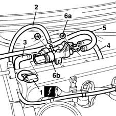

1060F50 fuel return manifold - r r
- Path
- Procedures > 10 ENGINE UNIT > 1060 DIESEL FUEL INJECTION > 1060F injectors and lines > 1060F50 fuel return manifold - r r
- Kind
- repair procedure (removal / refitting; the operation number is the code)
- Applies to
- engines: 1.9 JTD 8V; all production periods
- Interactive page
- https://sloeber94.github.io/elrnDB-fMltpl/en/#/2891407
Applies to: engines: 1.9 JTD 8V; all production periods
 Removing
Removing
 Refitting
Refitting1016A10 sound-proofing cover - r + r
Disconnect the battery negative (-) terminal.
1. Disconnect the electrical connection from the fuel temperature sensor.
 | Name | Connector |
|---|---|---|
1 | Fuel temperature sensor |
2. Disconnect the fuel return pipe for lubricating the injectors.
3. Disconnect the fuel return pipe from the pressure pump.
4. Disconnect the return pipe to the tank.
5. Disconnect the return pipe to the fuel filter.
6. Undo bolts (6a) and remove fuel return manifold pipe (6b).

Applies to: engines: 1.9 JTD 8V; all production periods
Refitting
RemovingFit the fuel return manifold pipe.
Tighten the retaining nuts.
Connect the return pipe to the fuel filter using a new clamp.
Connect the return pipe to the tank using a new clamp.
Connect the fuel return pipe from the pressure pump using a new clamp.
Connect the fuel return pipe for lubricating the injectors using a new clamp.
Connect the electrical connection to the fuel temperature sensor.
| Name | Connector |
|---|---|---|
- | Fuel temperature sensor |
Connect the negative (-) battery terminal.
Topics linked from this page (2)
Topics that link to this page (9)
- 1016C11 single cylinder head-r r gasket for versions with air conditioner
- 1028H11 piston connecting rod set - r r
- 1060E10 pressure pump - r r
- 1060E40 supplementary pressure pump - r r
- 1060F20 pressure pump/manifold pipe - r r
- 1060F30 fuel delivery manifold - r r
- 1060F36 lines to injectors - r r
- 1072B10 inlet manifold - r + r and replace seal
- 5520C10 glow plugs - r+r